Developing Understanding
Psychoactive Substances is commonly known as drugs,
have long been part of human culture, influencing perception, mood, and behavior. These
substances alter brain function and can be categorized into stimulants,
depressants, hallucinogens, and opioids. While some are medically prescribed, others,
like cocaine and heroin, are classified as drugs of abuse due to their addictive and
harmful nature. Misuse can lead to addiction, mental health issues, and societal
problems. Understanding these substances is crucial for promoting health and preventing
substance abuse.
TYPES OF PSYCHOACTIVE DRUGS
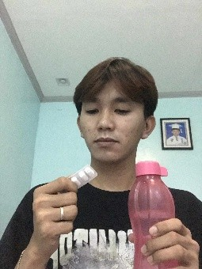
1. DEPRESSANTS
These substances have a calming effect on the brain, inducing
drowsiness and relaxation. However, they may also
trigger nightmares, anxiety, and aggression. Alcohol serves as a prominent example of a
depressant.
- Alcohol: A widely consumed depressant.
- Benzodiazepines: Prescription drugs like Xanax (alprazolam) used to
treat anxiety.
- Barbiturates: A class of drugs that can be used as sedatives or
anesthetics.
- Opioids: A group of drugs that includes both illegal substances
like heroin and prescription pain relievers like oxycodone.
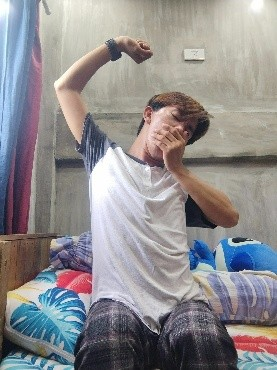
2. STIMULANTS
This category encompasses substances like cocaine and
caffeine, which boost energy,
alertness, and wakefulness.
- Caffeine: The most widely consumed stimulant globally, found in
coffee, tea, chocolate, and energy drinks, primarily used for wakefulness and
increased alertness.
- Nicotine: The primary active ingredient in tobacco products
(cigarettes, vapes), known for both stimulant and relaxant effects and high
addictive potential.
- Cocaine: A powerful, highly addictive illicit drug derived from the
coca plant, known for producing intense, short-lived euphoria. It has limited
medical use as a local anesthetic in specific surgical procedures.
- Methamphetamine: A very strong, highly addictive synthetic drug
(both illegal and very rarely prescribed as Desoxyn) that can cause significant
damage to the brain and body with long-term use.
3. OPIATES
These drugs, known for their pain-relieving properties, induce
feelings of happiness or euphoria while
producing a sedative effect.
Misuse can lead to addiction. Examples include heroin.
- Oxycodone
- Oxymorphone
- Hydrocodone
- Hydromorphone
- Fentanyl
- Morphine
- Codeine
- Methadone
- Tramadol
- Buprenorphine
4. HALLUCINOGENS
These substances provoke hallucinations, altering perception to the extent of seeing or
hearing things that aren't present. They may also distort time perception, induce a
sense of detachment from surroundings, or evoke profound insights. LSD is a notable
example of a hallucinogen.
- LSD (Lysergic acid diethylamide): A potent synthetic chemical
derived from ergot, a fungus that grows on rye and other grains. It is typically
found on blotter paper, in tablets, or in liquid form.
- Psilocybin: The psychoactive compound found in certain species of
"magic mushrooms." The mushrooms are usually eaten raw, cooked, or brewed into a
tea.
- Peyote (Mescaline): A small, spineless cactus whose main active
ingredient is mescaline. The disk-shaped "buttons" from the cactus crown are usually
chewed or soaked in water to produce an intoxicating liquid.
- DMT (Dimethyltryptamine): A naturally occurring chemical in some
plants, which can also be human-made. It is often consumed as an Amazonian brew
called ayahuasca, or as a white powder that is smoked.
General Adverse Effects of Substance Use (Short-Term
and Long Term) On the Person, Family, School, and the Community
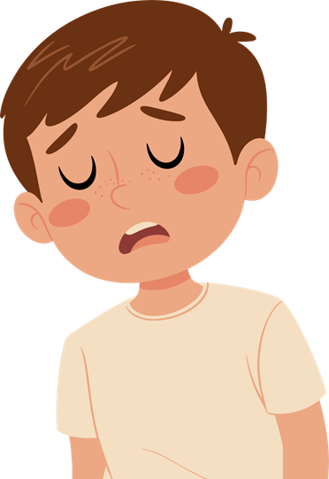
EFFECTS OF SUBSTANCE USE ON THE PERSON -
SHORT-TERM
- Cognitive impairment and memory problems
- Physical health risks (nausea, vomiting, dehydration)
- Impaired judgment and decision-making
- Increased risk-taking behavior
- Accidents and injuries (falls, motor vehicle accidents)
- Risk of overdose and poisoning
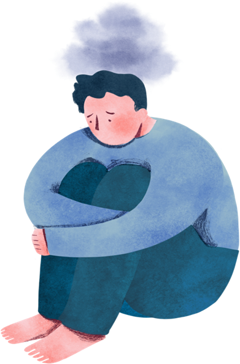
EFFECTS OF SUBSTANCE USE ON THE PERSON -
LONG-TERM
- Mental health disorders (depression, anxiety, psychosis)
- Chronic health problems (liver disease, cardiovascular issues)
- Development of substance dependence or addiction
- Cognitive decline and impairment
- Legal consequences (criminal record, incarceration)
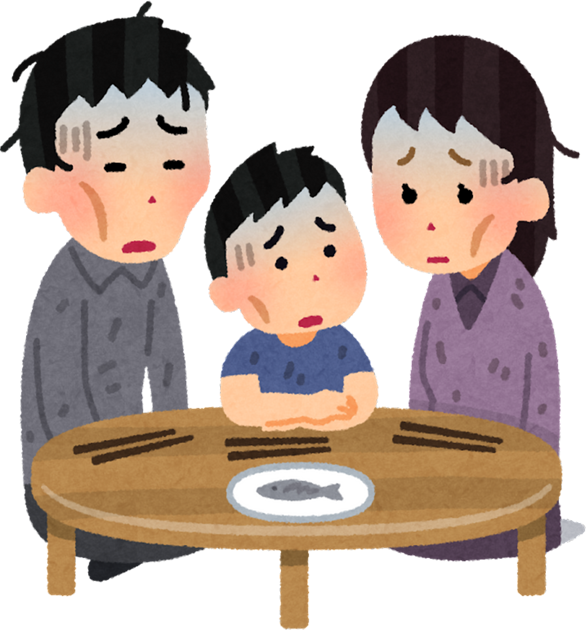
EFFECTS OF SUBSTANCE USE ON THE FAMILY -
SHORT-TERM
- Neglect of family responsibilities (childcare, household duties)
- Emotional distress and instability
- Strained relationships and conflicts
- Financial strain due to substance-related expenses
- Feelings of shame, guilt, and embarrassment
- Increased risk of domestic violence and abuse
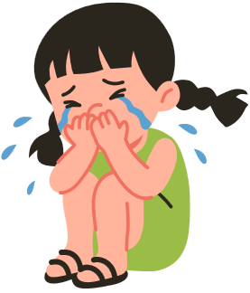
EFFECTS OF SUBSTANCE USE ON THE FAMILY -
LONG-TERM
- Financial instability and poverty
- Intergenerational transmission of substance uses disorders
- Breakdown of family relationships and estrangement
- Emotional trauma and psychological scars
- Loss of trust and communication
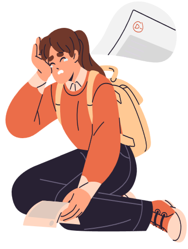
EFFECTS OF SUBSTANCE USE ON THE SCHOOL -
SHORT-TERM
- Increased disciplinary actions and suspensions
- Disruption of classroom dynamics and learning environments
- Decreased academic performance and attendance
- Difficulty concentrating and retaining information
- Peer influence and pressure to engage in substance use
- Risk of expulsion or dropout
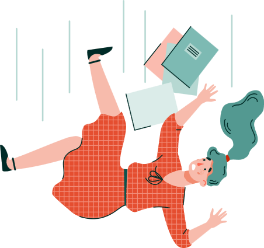
EFFECTS OF SUBSTANCE USE ON THE SCHOOL -
LONG-TERM
- Disengagement from school and educational goals
- Increased risk of involvement in delinquent activities
- Persistent academic underachievement and dropout
- Reduced opportunities for future success and employment
- Impact on school reputation and community perception
EFFECTS OF SUBSTANCE USE ON THE COMMUNITY -
SHORT-TERM
- Crime and antisocial behavior (theft, vandalism)
- Increased burden on healthcare and emergency services
- Public health concerns (spread of infectious diseases through needle sharing)
- Environmental impacts (littering, pollution from drug production)
- Social stigma and discrimination against individuals with substance use disorders
- Decreased community cohesion and trust
EFFECTS OF SUBSTANCE USE ON THE COMMUNITY -
LONG-TERM
- Social inequalities and disparities in access to resources
- Disruption of community safety and security
- Economic burden from healthcare costs and social services
- Deterioration of neighborhood environments and property values
- Strain on community resources and support systems
- Negative portrayal in media leading to stigma and discrimination
Preventive Measures Against Substance Use and
Abuse
(Emphasize Non-Use as the Norm)
Preventing substance abuse may not have a guaranteed formula, but there are steps
everyone can take to reduce its chances. Here are five simple ways to do it:
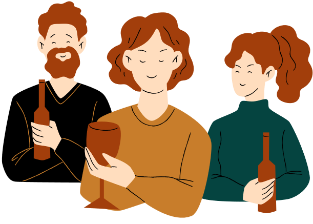
PREVENTIVE MEASURES AGAINST SUBSTANCE USE
Know How Substance Abuse Starts - It often begins with using addictive
drugs for fun, always seeking to get high, or misusing prescription meds.
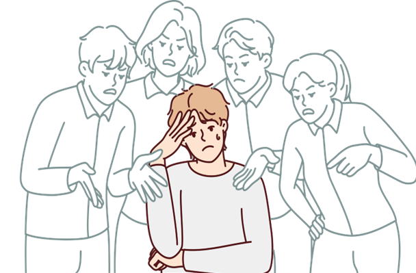
Avoid Peer Pressure- Stay away from friends or family who push you to
use drugs. If you're around people who do drugs, you might be tempted. Learning to say
no firmly and planning ahead can help.

Get Help for Mental Health- If you're struggling with anxiety,
depression, or trauma, talk to a therapist. They can teach you healthy ways to cope
without turning to drugs.
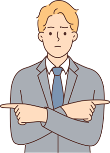
Understand Your Risks- If addiction runs in your family or if you're
exposed to certain environments, you might be at higher risk. Knowing these factors can
help you make better choices.

Keep a Balanced Life- Find healthy ways to manage stress and fill any
gaps in your life. When you have good ways to cope, you're less likely to turn to drugs
or alcohol for relief.